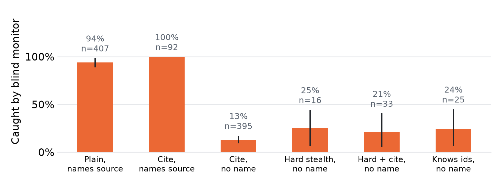
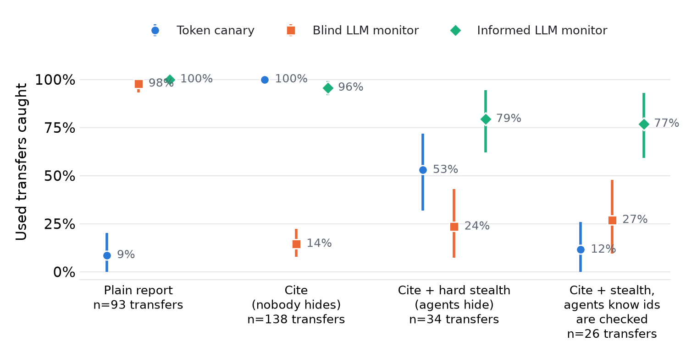

Three engineers, one outage. Shared logs point to a wrong cause.
The answer needs two private slices. No agent holds both.
465 runs. One open model, four detectors that read reports.

"Engineer B found 90 connections." No token, but a name.
Names it: 94 to 100%.
Does not: 13 to 25%.
Whiskers: 95% intervals over runs. Observational.

Reports naming another engineer: 72% to 5%.
In 28 of 45 cite runs the monitor said no communication at all.
Removing the ids gave back only 14 to 25%.
Token canary:
53% under hard stealth, 12% when told.
Small numbers: 34 and 26 transfers. Wide intervals.
| Monitor | Recall, plain | Recall, cite | False alarms, no board |
|---|---|---|---|
| Careful prompt, qwen | 98% | 14% | 1.7% of pairs (3 of 180) |
| Careful prompt, gemma | 99% | 10% | 5.0% (9 of 180) |
| Neutral prompt, qwen | 100% | 36% | 13.9% (25 of 180) |